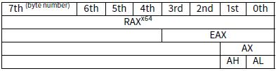
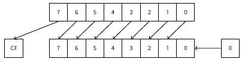
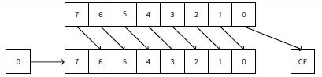

第十九章
操纵特殊的bit
很多函数参数的输入标志使用了位域。当然，可以使用bool类型来替代，只是有点浪费。
19.1 Specific bit checking
x86
Win32 API 例子:
HANDLE fh;
fh=CreateFile("file", GENERIC_WRITE | GENERIC_READ, FILE_SHARE_READ, NULL, OPEN_ALWAYS, FILE_ATTRIBUTE_NORMAL, NULL);
MSVC 2010： Listing 17.1: MSVC 2010
push 0
push 128 ; 00000080H
push 4
push 0
push 1
push -1073741824 ; c0000000H
push OFFSET $SG78813
call DWORD PTR __imp__CreateFileA@28
mov DWORD PTR _fh$[ebp], eax
我们再查看WinNT.h:
Listing 17.2: WinNT.h
#define GENERIC_READ (0x80000000L)
#define GENERIC_WRITE (0x40000000L)
#define GENERIC_EXECUTE (0x20000000L)
#define GENERIC_ALL (0x10000000L)
容易看出GENERIC_READ | GENERIC_WRITE = 0x80000000 | 0x40000000 = 0xC0000000，该值作为CreateFile()1函数的第二个参数。 CreateFile()如何检查该标志呢？ 以Windows XP SP3 x86为例，在kernel32.dll中查看CreateFileW检查该标志的代码片段： Listing 17.3: KERNEL32.DLL (Windows XP SP3 x86)
.text:7C83D429 test byte ptr [ebp+dwDesiredAccess+3], 40h
.text:7C83D42D mov [ebp+var_8], 1
.text:7C83D434 jz short loc_7C83D417
.text:7C83D436 jmp loc_7C810817
我们来看TEST指令，该指令并未检测整个第二个参数，仅检测关键的一个字节(ebp+dwDesiredAccess+3)，检测0x40标志（这里代表GENERIC_WRITE标志）。 Test对两个参数(目标，源)执行AND逻辑操作,并根据结果设置标志寄存器,结果本身不会保存（CMP和SUB与此类似（6.6.1））。 该代码片段逻辑如下：
if ((dwDesiredAccess&0x40000000) == 0) goto loc_7C83D417
如果AND指令没有设置ZF位，JZ将不触发跳转。如果dwDesiredAccess不等于0x40000000，AND结果将是0，ZF位将会被设置，条件跳转将被触发。
我们在linux GCC 4.4.1下查看：
#include <stdio.h>
#include <fcntl.h>
void main()
{
int handle;
handle=open ("file", O_RDWR | O_CREAT);
};
我们得到： Listing 17.4: GCC 4.4.1
public main
main proc near
var_20 = dword ptr -20h
var_1C = dword ptr -1Ch
var_4 = dword ptr -4
push ebp
mov ebp, esp
and esp, 0FFFFFFF0h
sub esp, 20h
mov [esp+20h+var_1C], 42h
mov [esp+20h+var_20], offset aFile ; "file"
call _open
mov [esp+20h+var_4], eax
leave
retn
main endp
我们在libc.so.6库中查看open()函数，看到syscall： Listing 17.5: open() (libc.so.6)
.text:000BE69B mov edx, [esp+4+mode] ; mode
.text:000BE69F mov ecx, [esp+4+flags] ; flags
.text:000BE6A3 mov ebx, [esp+4+filename] ; filename
.text:000BE6A7 mov eax, 5
.text:000BE6AC int 80h ; LINUX - sys_open
因此open()对于标志位的检测在内核中。 对于linux2.6，当sys_open被调用时，最终传递到do_sys_open内核函数，然后进入do_filp_open()函数（该函数位于源码fs/namei.c中）。 除了通过堆栈传递参数，还可以通过寄存器传递方式，这种调用方式成为fastcall(47.3)。这种调用方式CPU不需要访问堆栈就可以直接读取参数的值，所以速度更快。GCC有编译选项regram2，可以设置通过寄存器传递的参数的个数。 Linux2.6内核编译附加选项为-mregram=33 4。 这意味着前3个参数通过EAX、EDX、ECX寄存器传递，剩余的参数通过堆栈传递。如果参数小于3，仅部分寄存器被使用。 我们下载linux内核2.6.31源码，在Ubuntu中编译：make vmlinux，在IDA中打开，找到do_filp_open()函数。在开始部分我们可以看到（注释个人添加）： Listing 17.6:do_filp_open() (linux kernel 2.6.31)
do_filp_open proc near
...
push ebp
mov ebp, esp
push edi
push esi
push ebx
mov ebx, ecx
add ebx, 1
sub esp, 98h
mov esi, [ebp+arg_4] ; acc_mode (5th arg)
test bl, 3
mov [ebp+var_80], eax ; dfd (1th arg)
mov [ebp+var_7C], edx ; pathname (2th arg)
mov [ebp+var_78], ecx ; open_flag (3th arg)
jnz short loc_C01EF684
mov ebx, ecx ; ebx <- open_flag
GCC保存3个参数的值到堆栈。否则，可能会造成寄存器浪费。 我们来看代码片段： Listing 17.7: do_filp_open() (linux kernel 2.6.31)
loc_C01EF6B4: ; CODE XREF: do_filp_open+4F
test bl, 40h ; O_CREAT
jnz loc_C01EF810
mov edi, ebx
shr edi, 11h
xor edi, 1
and edi, 1
test ebx, 10000h
jz short loc_C01EF6D3
or edi, 2
O_CREAT宏等于0x40，如果open_flag为0x40，标志位被置1，接下来的JNZ指令将被触发。
ARM
Linux kernel3.8.0检测O_CREAT过程有点不同。 Listing 17.8: linux kernel 3.8.0
struct file *do_filp_open(int dfd, struct filename *pathname, const struct open_flags *op)
{
... filp = path_openat(dfd, pathname, &nd, op, flags | LOOKUP_RCU); ...
}
static struct file *path_openat(int dfd, struct filename *pathname, struct nameidata *nd, const struct open_flags *op, int flags)
{
... error = do_last(nd, &path, file, op, &opened, pathname); ...
}
static int do_last(struct nameidata *nd, struct path *path, struct file *file, const struct open_flags *op, int *opened, struct filename *name)
{
...
if (!(open_flag & O_CREAT)) {
...
error = lookup_fast(nd, path, &inode);
...
} else {
... error = complete_walk(nd);
}
...
}
在IDA中查看ARM模式内核： Listing 17.9: do_last() (vmlinux)
...
.text:C0169EA8 MOV R9, R3 ; R3 - (4th argument) open_flag
...
.text:C0169ED4 LDR R6, [R9] ; R6 - open_flag
...
.text:C0169F68 TST R6, #0x40 ; jumptable C0169F00 default case
.text:C0169F6C BNE loc_C016A128
.text:C0169F70 LDR R2, [R4,#0x10]
.text:C0169F74 ADD R12, R4, #8
.text:C0169F78 LDR R3, [R4,#0xC]
.text:C0169F7C MOV R0, R4
.text:C0169F80 STR R12, [R11,#var_50]
.text:C0169F84 LDRB R3, [R2,R3]
.text:C0169F88 MOV R2, R8
.text:C0169F8C CMP R3, #0
.text:C0169F90 ORRNE R1, R1, #3
.text:C0169F94 STRNE R1, [R4,#0x24]
.text:C0169F98 ANDS R3, R6, #0x200000
.text:C0169F9C MOV R1, R12
.text:C0169FA0 LDRNE R3, [R4,#0x24]
.text:C0169FA4 ANDNE R3, R3, #1
.text:C0169FA8 EORNE R3, R3, #1
.text:C0169FAC STR R3, [R11,#var_54]
.text:C0169FB0 SUB R3, R11, #-var_38
.text:C0169FB4 BL lookup_fast
...
.text:C016A128 loc_C016A128 ; CODE XREF: do_last.isra.14+DC
.text:C016A128 MOV R0, R4
.text:C016A12C BL complete_walk
...
TST指令类似于x86下的TEST指令。 这段代码来自do_last()函数源码，有两个分支lookup_fast()和complete_walk()。这里O_CREAT宏也等于0x40。
19.2 Specific bit setting/clearing
例如：
#define IS_SET(flag, bit) ((flag) & (bit))
#define SET_BIT(var, bit) ((var) |= (bit))
#define REMOVE_BIT(var, bit) ((var) &= ~(bit))
int f(int a)
{
int rt=a;
SET_BIT (rt, 0x4000);
REMOVE_BIT (rt, 0x200);
return rt;
};
19.2.1 x86
Non-optimizing MSVC
MSVC 2010: Listing 17.10: MSVC 2010
_rt$ = -4 ; size = 4
_a$ = 8 ; size = 4
_f PROC
push ebp
mov ebp, esp
push ecx
mov eax, DWORD PTR _a$[ebp]
mov DWORD PTR _rt$[ebp], eax
mov ecx, DWORD PTR _rt$[ebp]
or ecx, 16384 ; 00004000H
mov DWORD PTR _rt$[ebp], ecx
mov edx, DWORD PTR _rt$[ebp]
and edx, -513 ; fffffdffH
mov DWORD PTR _rt$[ebp], edx
mov eax, DWORD PTR _rt$[ebp]
mov esp, ebp
pop ebp
ret 0
_f ENDP
OR指令添加一个或多个bit位而忽略了其余位。 AND用来重置一个bit位。
OllyDbg
Optimizing MSVC
如果我们使用msvc编译，并且打开优化选项(/Ox)，代码将会更短： Listing 17.11: Optimizing MSVC
_a$ = 8 ; size = 4
_f PROC
mov eax, DWORD PTR _a$[esp-4]
and eax, -513 ; fffffdffH
or eax, 16384 ; 00004000H
ret 0
_f ENDP
Non-optimizing GCC
我们来看GCC 4.4.1无优化的代码：
public f
f proc near
var_4 = dword ptr -4
arg_0 = dword ptr 8
push ebp
mov ebp, esp
sub esp, 10h
mov eax, [ebp+arg_0]
mov [ebp+var_4], eax
or [ebp+var_4], 4000h
and [ebp+var_4], 0FFFFFDFFh
mov eax, [ebp+var_4]
leave
retn
f endp
Optimizing GCC
MSVC未优化的代码有些冗余。 现在我们来看GCC打开优化选项-O3：
Listing 17.13: Optimizing GCC
public f
f proc near
arg_0 = dword ptr 8
push ebp
mov ebp, esp
mov eax, [ebp+arg_0]
pop ebp
or ah, 40h
and ah, 0FDh
retn
f endp
代码更短。值得注意的是编译器使用了AH寄存器-EAX寄存器8bit-15bit部分。

8086 16位CPU累加器被称为AX，包含两个8位部分-AL（低字节）和AH（高字节）。在80386下所有寄存器被扩展为32位，累加器被命名为EAX，为了保持兼容性，它的老的部分仍可以作为AX/AH/AL寄存器来访问。 因为所有的x86 CPU都兼容于16位CPU，所以老的16位操作码比32位操作码更短。”or ah,40h”指令仅复制3个字节比“or eax,04000h”需要复制5个字节甚至6个字节（如果第一个操作码不是EAX）更合理。
Optimizing GCC and regparm
编译时候开启-O3并且设置regram=3生成的代码会更短。
Listing 19.14: Optimizing GCC
public f
f proc near
push ebp
or ah, 40h
mov ebp, esp
and ah, 0FDh
pop ebp
retn
f endp
事实上，第一个参数已经被加载到EAX了，所以可以直接使用了。值得注意的是，函数序言（push ebp/mov ebp,esp）和结语（pop ebp）很容易被忽略。GCC并没有优化掉这些代码。更短的代码可以使用内联函数（27）。
19.2.2 ARM + Optimizing Keil + ARM mode
Listing 19.15: Optimizing Keil + ARM mode
02 0C C0 E3 BIC R0, R0, #0x200
01 09 80 E3 ORR R0, R0, #0x4000
1E FF 2F E1 BX LR
BIC是“逻辑and“类似于x86下的AND。ORR是”逻辑or“类似于x86下的OR。
19.2.3 ARM + Optimizing Keil + thumb mode
Listing 19.16: Optimizing Keil + thumb mode
01 21 89 03 MOVS R1, 0x4000
08 43 ORRS R0, R1
49 11 ASRS R1, R1, #5 ; generate 0x200 and place to R1
88 43 BICS R0, R1
70 47 BX LR5
从0x4000右移生成0x200，采用移位使代码更简洁。
19.2.4 ARM + Optimizing Xcode (LLVM) + ARM mode
Listing 19.17: Optimizing Xcode (LLVM) + ARM mode
42 0C C0 E3 BIC R0, R0, #0x4200
01 09 80 E3 ORR R0, R0, #0x4000
1E FF 2F E1 BX LR
该代码由LLVM生成，从源码形式上看，看起来更像是：
REMOVE_BIT (rt, 0x4200);
SET_BIT (rt, 0x4000);
为什么是0x4200?可能是编译器构造的5，可能是编译器编译错误，但生成的代码是可用的。 更多编译器异常请参考相关资料（67）。 对于thumb模式，优化Xcode(LLVM)生成的代码相似。
19.2.5 ARM: more about the BIC instruction
19.2.6 ARM64: Optimizing GCC (Linaro) 4.9
19.2.7 ARM64: Non-optimizing GCC (Linaro) 4.9
19.2.8 MIPS
19.3 Shifts
C/C++的移位操作通过<<和>>实现。
19.4 设定并请除特定的bit
19.4.1 关于异或的一点
19.4.2 x86
19.4.3 MIPS
19.4.4 ARM
Optimizing Keil 6/2013 (ARM mode)
Optimizing Keil 6/2013 (Thumb mode)
Optimizing GCC 4.6.3 (Raspberry Pi, ARM mode)
19.5 计数bit 来置1
这里有一个例子函数，计算输入变量有多少个位被置为1.
#define IS_SET(flag, bit) ((flag) & (bit))
int f(unsigned int a)
{
int i;
int rt=0;
for (i=0; i<32; i++)
if (IS_SET (a, 1<<i))
rt++;
return rt;
};
在循环中，迭代计数从0到31，1<<i语句将计数从1到0x80000000。1<<i即1左移n位，将包含32位数字所有可能的bit位。每次移位仅有1位被置1，其它位均为0，IS_SET宏将判断a对应的位是否置1。

IS_SET宏就是逻辑与(AND)操作，如果对应的位不为1，则返回0。if条件表达式如果不为0，if()将被触发。
19.5.1 x86
MSVC
MSVC 2010:
Listing 19.18: MSVC 2010
_rt$ = -8 ; size = 4
_i$ = -4 ; size = 4
_a$ = 8 ; size = 4
_f PROC
push ebp
mov ebp, esp
sub esp, 8
mov DWORD PTR _rt$[ebp], 0
mov DWORD PTR _i$[ebp], 0
jmp SHORT $LN4@f
$LN3@f:
mov eax, DWORD PTR _i$[ebp] ; increment of 1
add eax, 1
mov DWORD PTR _i$[ebp], eax
$LN4@f:
cmp DWORD PTR _i$[ebp], 32 ; 00000020H
jge SHORT $LN2@f ; loop finished?
mov edx, 1
mov ecx, DWORD PTR _i$[ebp]
shl edx, cl ; EDX=EDX<<CL
and edx, DWORD PTR _a$[ebp]
je SHORT $LN1@f ; result of AND instruction was 0?
; then skip next instructions
mov eax, DWORD PTR _rt$[ebp] ; no, not zero
add eax, 1 ; increment rt
mov DWORD PTR _rt$[ebp], eax
$LN1@f:
jmp SHORT $LN3@f
$LN2@f:
mov eax, DWORD PTR _rt$[ebp]
mov esp, ebp
pop ebp
ret 0
_f ENDP
OllyDbg
GCC
下面是GCC 4.4.1编译的代码： Listing 19.19: GCC 4.4.1
public f
f proc near
rt = dword ptr -0Ch
i = dword ptr -8
arg_0 = dword ptr 8
push ebp
mov ebp, esp
push ebx
sub esp, 10h
mov [ebp+rt], 0
mov [ebp+i], 0
jmp short loc_80483EF
loc_80483D0:
mov eax, [ebp+i]
mov edx, 1
mov ebx, edx
mov ecx, eax
shl ebx, cl
mov eax, ebx
and eax, [ebp+arg_0]
test eax, eax
jz short loc_80483EB
add [ebp+rt], 1
loc_80483EB:
add [ebp+i], 1
loc_80483EF:
cmp [ebp+i], 1Fh
jle short loc_80483D0
mov eax, [ebp+rt]
add esp, 10h
pop ebx
pop ebp
retn
f endp
19.5.2 x64
Non-optimizing GCC 4.8.2
Optimizing GCC 4.8.2
Optimizing MSVC 2010
Optimizing MSVC 2012
在乘以或者除以2的指数值（1,2,4,8等）时经常使用移位操作。 例如：
unsigned int f(unsigned int a)
{
return a/4;
};
MSVC 2010: Listing 19.20: MSVC 2010
_a$ = 8 ; size = 4
_f PROC
mov eax, DWORD PTR _a$[esp-4]
shr eax, 2
ret 0
_f ENDP
例子中的SHR（逻辑右移）指令将a值右移2位，最高两位被置0，最低2位被丢弃。实施上丢弃的两位是除法的余数。 SHR作用类似SHL只是移位方向不同。

使用十进制23很好来理解。23除以10，丢弃最后的数字（3是余数），商为2。 与此类似的是乘法。比如乘以4，仅需将数字左移2位，最低两位被置0。就像3乘以100—仅仅在最后补两个0就行了。
19.5.3 ARM + Optimizing Xcode (LLVM) + ARM mode
Listing 19.21: Optimizing Xcode (LLVM) + ARM mode
MOV R1, R0
MOV R0, #0
MOV R2, #1
MOV R3, R0
loc_2E54
TST R1, R2,LSL R3 ; set flags according to R1 & (R2<<R3)
ADD R3, R3, #1 ; R3++
ADDNE R0, R0, #1 ; if ZF flag is cleared by TST, R0++
CMP R3, #32
BNE loc_2E54
BX LR
TST类似于x86下的TEST指令。 正如我前面提到的(14.2.1)，ARM模式下没有单独的移位指令。对于用作修饰的LSL（逻辑左移）、LSR（逻辑右移）、ASR（算术右移）、ROR（循环右移）和RRX（带扩展的循环右移指令），需要与MOV，TST，CMP，ADD，SUB，RSB结合来使用6。 这些修饰指令被定义，第二个操作数指定移动的位数。 因此“TST R1, R2,LSL R3”指令所做的工作为????1 ∧ (????2 ≪ ????3).
19.5.4 ARM + Optimizing Xcode (LLVM) + thumb-2 mode
几乎一样，只是这里使用LSL.W/TST指令而不是只有TST。因为Thumb模式下TST没有定义修饰符LSL。
MOV R1, R0
MOVS R0, #0
MOV.W R9, #1
MOVS R3, #0
loc_2F7A
LSL.W R2, R9, R3
TST R2, R1
ADD.W R3, R3, #1
IT NE
ADDNE R0, #1
CMP R3, #32
BNE loc_2F7A
BX LR